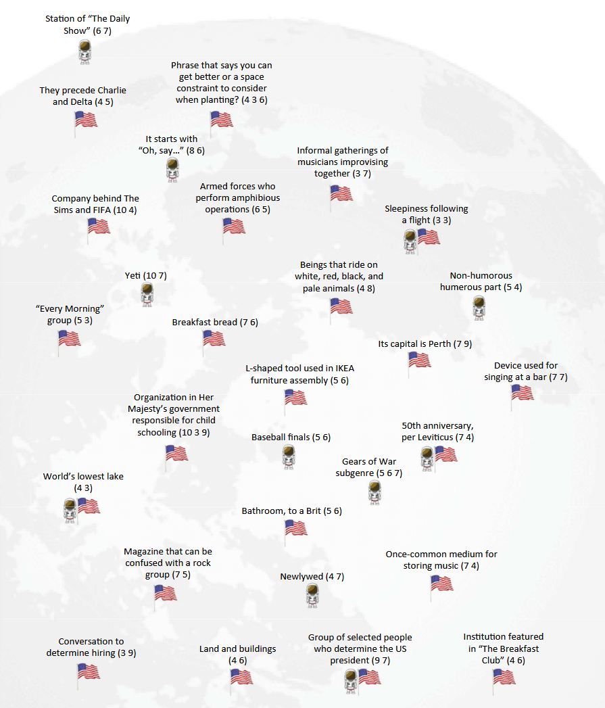

Once Neil and Edwin planted their flags, it seemed like everyone wanted in on the action (even those just along for the ride). Overcoming initial hesitation, their commanders took center stage as they proudly waved the American flag.

- 🧑🚀 Station of "The Daily Show" (6 7)
- 🇺🇸 They precede Charlie and Delta (4 5)
- 🇺🇸 Phrase that says you can get better or a space constraint to consider when planting? (4 3 6)
- 🧑🚀 It starts with "Oh, say..." (8 6)
- 🇺🇸 Informal gatherings of musicians improvising together (3 7)
- 🇺🇸 Company behind The Sims and FIFA (10 4)
- 🇺🇸 Armed forces who perform amphibious operations (6 5)
- 🧑🚀 🇺🇸 Sleepiness following a flight (3 3)
- 🧑🚀 Yeti (10 7)
- 🇺🇸 Beings that ride on white, red, black, and pale animals (4 8)
- 🇺🇸 Non-humorous humerous part (5 4)
- 🇺🇸 "Every Morning" group (5 3)
- 🇺🇸 Breakfast bread (7 6)
- 🇺🇸 Its capital is Perth (7 9)
- 🇺🇸 L-shaped tool used in IKEA furniture assembly (5 6)
- 🇺🇸 Device used for signing at a bar (7 7)
- 🇺🇸 Organization in Her Majesty's government responsible for child schooling (10 3 9)
- 🧑🚀 Baseball finals (5 6)
- 🧑🚀 🇺🇸 50th anniversary, per Leviticus (7 4)
- 🧑🚀 Gears of War subgenre (5 6 7)
- 🧑🚀 🇺🇸 World's lowest lake (4 3)
- 🇺🇸 Bathroom, to a Brit (5 6)
- 🇺🇸 Magazine that can be confused with a rock group (7 5)
- 🧑🚀 Newlywed (4 7)
- 🇺🇸 Once-common medium for storing music (7 4)
- 🇺🇸 Conversation to determine hiring (3 9)
- 🇺🇸 Land and buildings (4 6)
- 🧑🚀 🇺🇸 Group of selected people who determine the US president (9 7)
- 🇺🇸 Institution featured in "The Breakfast Club" (4 6)